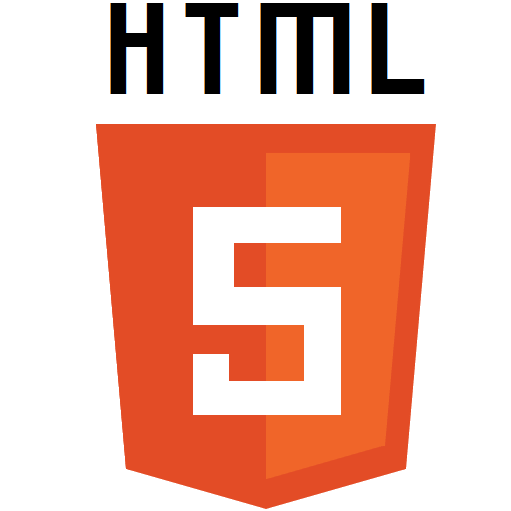
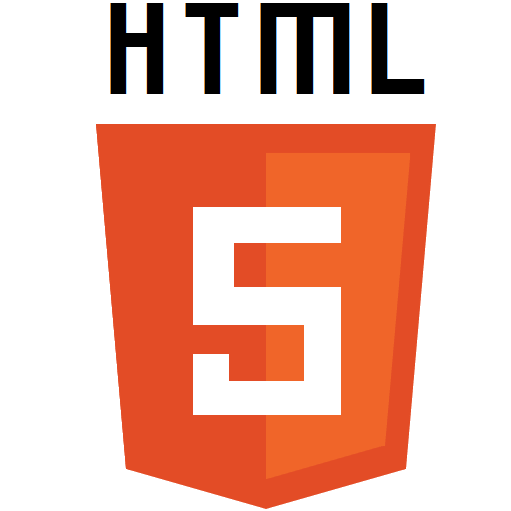

Projects
Disc Golf Scorecard
Platform

Description
This was another step in my endeavor to learn C# and .NET developement through the Windows Phone platform.
This app acts as a scorecard for disc golf games. Add players, add courses, and create scorecards. Simple and intuitive UI. This app utilizes C# for the backend, and XAML for frontend UI.
Technologies


View It

Tweeting Plants

Platform

Description
This was my senior project capstone project. The concept behind the project is having a system natural language generation system to create "tweets" that sound like they are coming from plants in a greenhouse. The project involved creation of an API for data access, a website for visuals on greenhouse information, and a system for generating tweets.
Technologies

 

View It
www.ghproject.tk